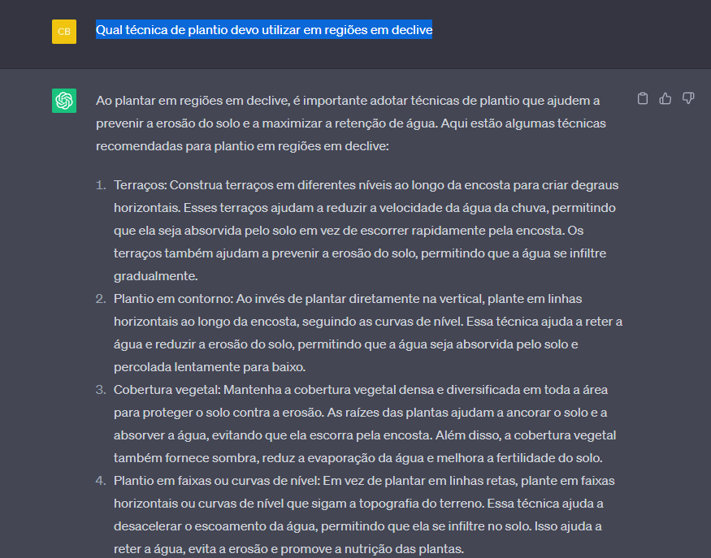

A inteligência artificial generativa é uma tecnologia que permite que um computador crie conteúdo original, como texto, imagens, música ou até mesmo vídeos. Ao contrário da inteligência artificial convencional, que é programada para executar tarefas específicas, a IA generativa é capaz de criar algo novo e inesperado.
Podemos utilizar IAs generativas informando alguma instrução de uso, ou inserindo algum dado necessário. Por exemplo, podemos utilizar o conhecido CHATGPT para auxiliar no desenvolvimento de uma agropecuária mais eficiente. No Exemplo abaixo, realizei uma pergunta: "Qual técnica de plantio devo utilizar em regiões em declive" e obtive a seguinte resposta:
Realizei outras perguntas que podem ser úteis para os produtores, e você pode verificá-las diretamente pelo site do CHATGPT.